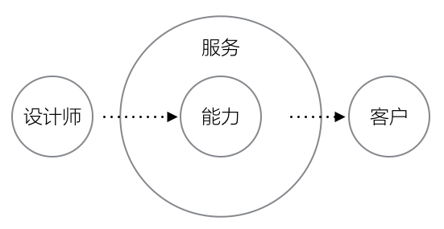
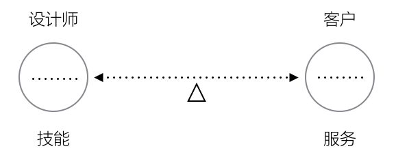
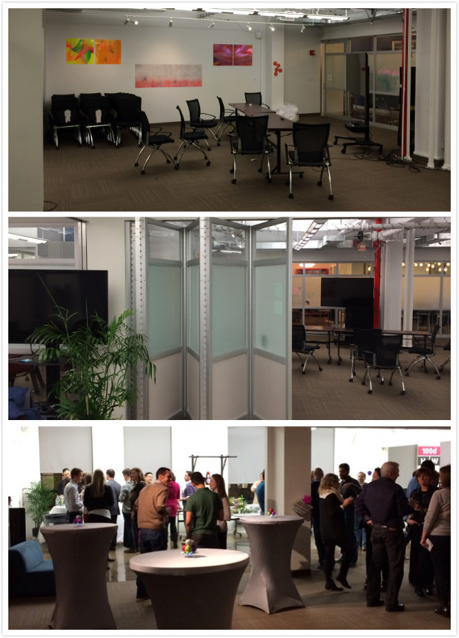
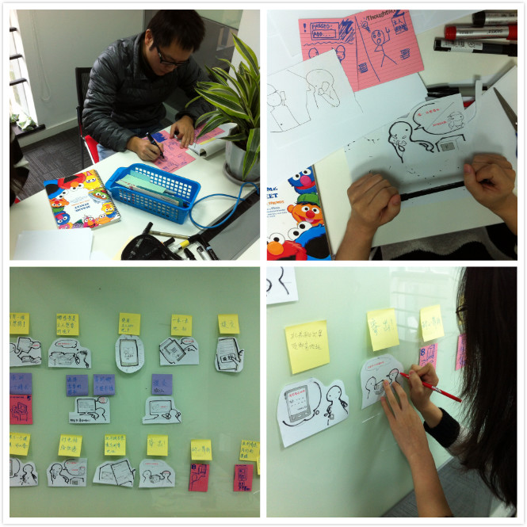
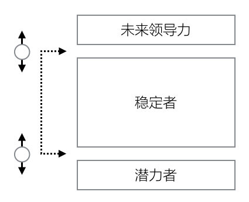

一个新兴的市场，设计业务的核心在于谁能够获得这个行业最年轻设计师中最优秀的部分，并留住他们，让他们成长。
从最基础的软件设计师开始、再到产品策略的制定者、最后到设计业务的管理者，过去的7年里，身上的职责和工作内容不断发生改变。
去年11月开始，我离开中国，接受了新的职责，身在外反而让我对设计业务本身有了更加全面的理解，也开始体会到设计业务特殊的领导力。
希望本文对于各公司设计业务的负责人有一些帮助。需要指出的是，这里的设计业务指“专业服务（Professional Service）”，而非类似互联网公司中设计作为主体业务的一个功能存在。
以下是我认为一个设计专业服务业务的领导者需要理解和掌握的内容：
设计专业服务业务
专业服务诸如律师、会计、理财、审计、IT服务等等，基础特点是“专业服务人员利用客户不具备或欠缺的专业能力为客户服务”，因此设计专业服务的四大要素即是：
- 专业服务人员，即设计师
- 专业能力，即设计能力
- 客户
- 服务

因此一个设计专业服务业务的领导者的事务便集中在这四个领域即：
- 如何获得和培养具有专业精神的设计师；
- 如何识别（市场新的专业能力）、包装（已有专业能力的组合）和提升设计专业能力；
- 如何识别、培育、获得更多有设计专业能力需要的客户；
- 如何识别、建设、包装、销售被市场所需要的服务。
这决定了一个设计业务领导者多元化的管理能力体系，相对应的有：
- 设计师管理
- 专业技能管理
- 客户管理
- 服务管理
事实上，设计师/能力，客户/服务，是位于天枰两端的经营要素，一个设计专业机构的持续发展，正是在于平衡。

目前国内在天枰两端有两种类型的设计机构：
一类通常极力强调以客户为导向，尽可能满足客户的需求，这样的公司资深员工和基层员工的薪资水平相较巨大，也存在巨大隔阂，大量1～3年经验的设计师有职业天花板，人才流失大，难以形成具有凝聚力的企业文化，市场的议价能力不断下降。
另一类通常强调以设计师为中心，尽可能满足员工的需求而轻服务体验，这样的公司通常有较凝聚和明显的企业文化，但却存在职业精神、成长动力、客户服务体验的问题，认同文化多于认同业务，容易出现集体出走的情况。
当然，上述平衡并非设计专业服务独有，大部分专业服务都有以上特征。那么，管理者最核心的部分便是：
- 通过对能力的管理来管理人
- 通过对服务的管理来管理客户
专业精神的设计师
设计在国内是一个新兴行业，因为旺盛的需求量，使得这个行业里的80%工作者只需要保持不变，就可以得到20~30%的增长。在程序员的世界里，已经有很多人意识到自己知识工作者的身份，因为编程语言的不断更新，自己的技能在自然状态下都是贬值的。
软件业发展超过50年，IT设计行业还远未达到如此的成熟度，自然人才的成熟度也相对较差。这里说的成熟度大致分为三个层次：
- 以设计为职业
- 以设计为专业
- 以设计为事业
这三者的本质区别是:
- 职业者只进行技能规划；
- 专业者进行知识规划；
- 事业者进行业务规划。
而作为一间设计专业服务公司，应该尽可能保证公司的主体是专业者，这保证了公司的稳定维持，而事业者则决定了公司的利润（在后面讨论），对于把设计当成一份职业而已的设计师，其实并不符合专业服务公司的要求。
对专业者的考察，可能包括寻找以下特质：
- 好奇、怀疑和考据
- 总结和回顾
- 抽象和定义
- 沟通和反馈
- 体会真实世界
- 快速学习的能力和学习的乐趣
- 从无关紧要的事情中获得启发
- 有野心和有趣
- 应对变化的能力
- 耐力和抗压
- 追求新的而不固守旧的
这样的设计师，是超越了技能层次的，是知识工作者的基础素质，他们应该是一个设计专业服务公司员工的基础要求。
这就是为什么我们在设计自己的面试作业时，并不把专业技能当成首要的考察纬度，而更多地去考察面试者如何超越自己的技能，对自己的知识进行规划。
作为设计专业服务公司的领导者，对于人才的考察应该着眼于上述特质，而并不简单通过技能考察筛选人才。事实上，拥有以上特质的设计师，在技能上都不会低于平均水平。
招募
经验告诉我，加入专业服务公司的最佳理由是因为雇主中有“值得跟随或合作的人”，其次才是客户资源、更多机会、以及收入。因此，作为设计专业服务的领导者，招募的最佳策略是让未来的雇员产生这种期待和信心，并再团队建设（在下面谈）中不断巩固这种“亲密关系”。
换言之，团队建设从成员还没有加入前就已经开始。ThoughtWorks纽约办公室专门雇佣了一位全职的“社交官”，并把办公室的中央完全作为向公众团体开放的社交场所（如下图），由社交官管理每天都有的活动，制造社交机会，从中获得可能的加入者。

既然我们的目标是那些把设计不仅仅当成一份工作的应聘者，他们对于工作之外的东西必然十分看重，那么，招募手段过程的体验也是需要业务领导者精心设计的。
最初开始设计整个招募过程时，我思考了几个阶段的体验：
- 第一次接触：第一次接触里我们会在最短的时间内判断设计对于应聘者的意义，而并不关注于其过去做的事情；
- 作业：在设计作业中来考察应聘者的基础技能，以及整体的包装能力，点击这里看我们的作业设计；
- 面试过程：尽可能的让团队更多人参与面试过程中，产生互动，激发化学反应（如下图）；
- 最后一个电话或面谈：作为团队领导者去了解应聘者对未来工作的期待。

在整个体验中，隐性的环节反而是对技能的考察，因为真正可能增值的是设计之外的东西，技能一定在贬值。
培养
被专业服务公司视为经营宝典的《Managing The Professional Service Firm》一书中开篇就提到了专业服务公司的项目体系：
- Brains：每个项目都是难以复制和独特的，例如帮助客户建立整套的体验设计流程和团队；
- Gray Hair：有较高难度、需要一定定制化的，例如帮助客户在全新的移动战略之下设计一款新产品；
- Procedure：日常的、标准化的、广泛被市场所接受的项目，例如在客户产品已有的基础上进行设计改进。
在项目体系之外，还有业务体系需要考虑，在我心目中一个专业服务公司的业务体系中还包括：
- 品牌和市场相关
- 销售相关
- 方法论相关
- 团队建设相关
- 招募相关
项目体系和业务体系不应该是互相冲突的，而是从最年轻的设计师一开始就应该鼓励和培养的。例如：就算一直从事的是相对流程性的工作，设计师也应该参与到业务体系的事务中来，而不应该有清晰的分工。
在我们的设计团队，除去本职工作之外，大部分团队成员都被赋予其他的业务职责，事实告诉我们，在业务职责上用心和热情的设计师，往往获得更大的职业机会、发展空间、以及团队认同度，同时，他们的成长也更快。我们的目标是让设计师团队的80%成员都能够有动力参与到整个团队的品牌、市场、方法论、团队建设、以及招募等工作中来。
对待新人的态度也决定了这支团队健康程度。设计行业的快速成长实际上使得90年的设计背景毕业生软硬技能大大超过了5年以前，加上更加多的市场需求，不客气地说，80年代设计师10年内所能得到的成长，90年代的设计师5年就能达到。
在设计这个行业，真正竞争的，是谁能够获得整个行业最年轻一代的设计师，使他们成长，并产生影响力。
作为设计专业服务的领导者，与最新一代设计师的情感联系，甚至要多于团队中的第二代领导力。给予最年轻一代设计师更多机会和关注，事实上也是为了对“停滞不前的中间层”以刺激。
任何一个组织经过一定时间的发展必然会出现“下一代的领导人”、“稳定的中间层”、以及“希望之星”，控制好比例，保持平衡（如下图示），则是领导者进行人才培养主要工作。

写在最后
设计业务与其他专业服务业务并无本质区别，其核心在于对内设计师招募和培养、对外形成销售和服务定义，每个工作项都是设计服务领导者的考核标准即：
- 是否完成团队的稳健增长？
- 是否形成稳定的梯队和成长？
- 是否持续获得销售机会？
- 是否持续开发和演进服务内容，以适应市场需要？